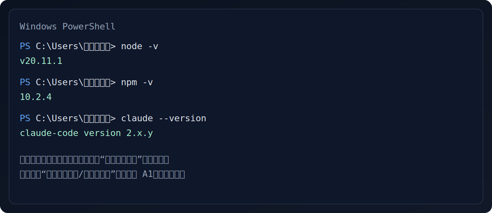
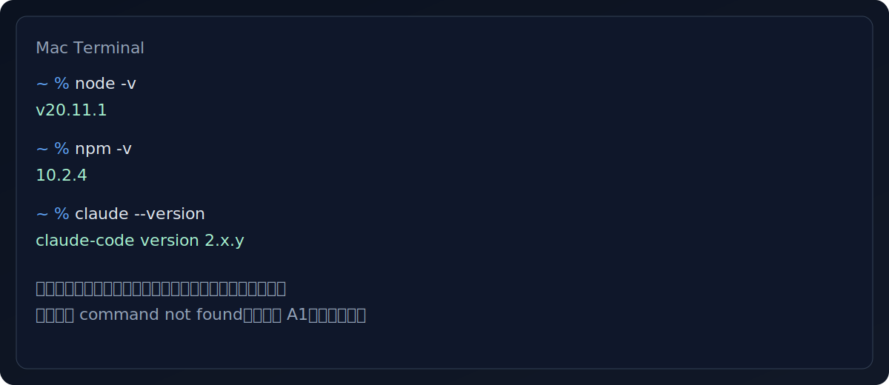
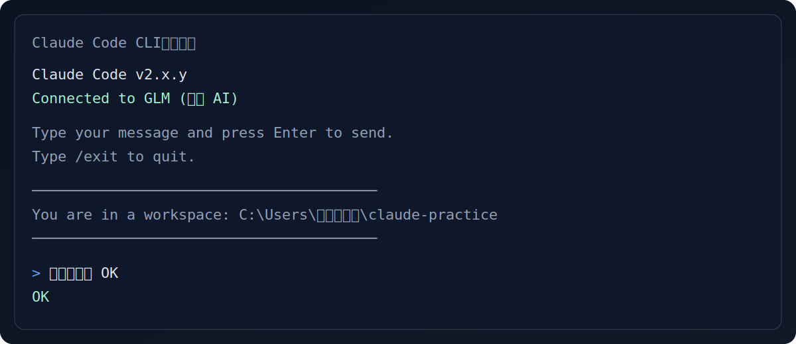

10分钟快速上手 Claude Code CLI
本页目标
只做三件事：装好 CLI → 配好 Key → 在命令行看到一次“成功回复”。
你不需要懂编程。跟着复制命令就行。
我用的系统（用于自动隐藏另一套步骤）
完成检查清单（建议勾完再走）
第1步：安装 Claude Code CLI（2分钟）
演示：如何打开命令行
新手必看
30秒
演示视频占位
教程升级中，敬请期待视频版
Windows：按 Win 键，输入 "PowerShell"，回车
Mac：打开"启动台" → 点击"终端"（或按 Command+空格，输入"Terminal"）
Mac：打开"启动台" → 点击"终端"（或按 Command+空格，输入"Terminal"）
打开命令行后，复制下面命令：
powershell
npm install -g @anthropic-ai/claude-code
# 验证安装
claude --version
bash
npm install -g @anthropic-ai/claude-code
# 验证安装
claude --version成功标志长什么样？
你会看到类似：claude-code version x.y.z（目前常见是 2.1.15，显示别的也正常，以你实际输出为准）。
PS C:\Users\YourName> claude --version
claude-code version 2.1.15
PS C:\Users\YourName> _
claude-code version 2.1.15
PS C:\Users\YourName> _

成功标志：能看到版本号（示意图，你的版本号可能不同）

成功标志：能看到版本号（示意图，你的版本号可能不同）
如果你看到 “npm 找不到 / 不是内部命令”
说明 Node.js 没装好或没加到 PATH。直接去第01章按步骤安装：第01章：环境安装。
第2步：配置 API Key（5分钟）
Claude Code 本身是工具，真正"回答你"的是模型服务，所以需要 Key。
重要：API Key 安全警告
API Key 就像你的银行卡密码，泄露可能导致：
- 额度被盗用：别人可以用你的额度调用 AI 服务
- 产生费用：如果是按量付费，可能产生高额账单
- 账户风险：异常使用可能导致账户被封禁
请务必：
- 不要发给任何人，包括自称官方客服的人
- 不要截图发群、发朋友圈
- 不要上传到 GitHub 等公开平台
- 发现泄露后立即到平台注销并重新生成
推荐：用“一键配置助手”（最省心）
- 去智谱开放平台注册并创建 Key：https://open.bigmodel.cn/
- 回到你的命令行，复制执行下面命令（按提示粘贴你的 Key）：
powershell / bash
npx @z_ai/coding-helper如果你看到 npx/npm 报错（最常见）
- 提示 npm 找不到：Node.js 没装好或 PATH 没生效 → 去 第01章 按步骤安装
- 卡住很久/网络失败：先换网络（手机热点也行）→ 再试
- 权限错误（EACCES/Access denied）：尽量在你自己的文件夹里操作；必要时用管理员权限打开终端
更多症状见：A1：故障排查（按症状）
备选：手动临时配置（只用于“先跑通”）
下面方式只在当前终端窗口有效，关掉窗口可能就失效。想长期生效请看 第01章 的“配置 Key”部分。
PowerShell（推荐）
# 替换为你的智谱 Key（只在本窗口生效）
$env:ANTHROPIC_AUTH_TOKEN="你的智谱API-Key"
$env:ANTHROPIC_BASE_URL="https://open.bigmodel.cn/api/anthropic"
CMD（如果你打开的是“命令提示符”）
REM 替换为你的智谱 Key（只在本窗口生效）
set ANTHROPIC_AUTH_TOKEN=你的智谱API-Key
set ANTHROPIC_BASE_URL=https://open.bigmodel.cn/api/anthropic
Mac Terminal
# 替换为你的智谱 Key（只在当前终端会话生效）
export ANTHROPIC_AUTH_TOKEN="你的智谱API-Key"
export ANTHROPIC_BASE_URL="https://open.bigmodel.cn/api/anthropic"可选：我想用 DeepSeek
DeepSeek 的接入方式可能随平台/网关不同而不同。建议先按智谱主线跑通，再看 第01章 DeepSeek 配置。
第3步：第一次成功对话（3分钟）
什么是"工作目录"？
工作目录就是你让 Claude Code 在哪个文件夹里干活。
建议用你自己的文件夹（比如：桌面/文档/用户目录）新建一个空文件夹专门练习，不要在系统目录里折腾。
Windows 用户：复制下面命令执行
这会在你的用户目录创建一个 claude-practice 文件夹并进入它（不需要 D 盘）。
PowerShell（推荐）
# 创建练习文件夹（如果已存在会跳过）
mkdir "$env:USERPROFILE\\claude-practice" -ErrorAction SilentlyContinue
# 进入文件夹
cd "$env:USERPROFILE\\claude-practice"
# 启动 Claude Code
claude
CMD（如果你打开的是“命令提示符”）
mkdir "%USERPROFILE%\\claude-practice" 2>nul
cd /d "%USERPROFILE%\\claude-practice"
claudeMac 用户：复制下面全部命令一起执行
这会帮你在你的用户目录下创建一个"claude-practice"文件夹：
bash
# 创建练习文件夹（如果已存在会跳过）
mkdir -p ~/claude-practice
# 进入这个文件夹
cd ~/claude-practice
# 确认当前位置
pwd
# 启动 Claude Code
claude第一次用命令行？
怎么复制粘贴：
- Windows PowerShell：复制代码后，在窗口里右键点击就会自动粘贴
- Mac Terminal：复制代码后，按
Command + V粘贴
粘贴后按 回车键（Enter） 执行命令。
然后在 Claude 里发一句话测试：
你好，回复“已成功连接”

成功标志：能连接到 GLM，并收到明确回复（示意图）
成功标志
你能收到明确、可读的回复，并且不会出现“无法连接/鉴权失败”。
如果失败：你只需要做一件事
打开 故障排查（按症状），用“我看到什么报错”来查。
本章小测
检验一下你学会了没
1. Claude Code CLI 是必须安装的吗？
2. API Key 泄露会有什么后果？
3. 配置 API Key 后，如何测试是否成功？
0/3
点击选项开始答题